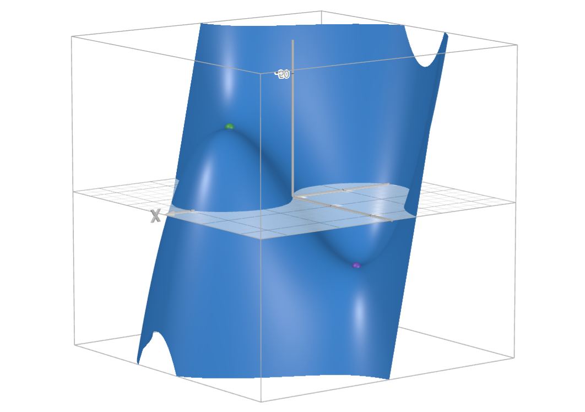
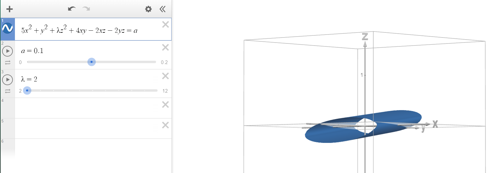

Calculus, Homework 13
Problem 1
Is it possible to study the point ( 0 , 0 ) (0,0) ( 0 , 0 ) f ( x , y ) = x y ( x 2 − y 2 ) x 2 + y 2 \displaystyle f(x,y)=\frac{xy(x^2-y^2)}{x^2+y^2} f ( x , y ) = x 2 + y 2 x y ( x 2 − y 2 )
In order to use our method for point ( 0 , 0 ) (0,0) ( 0 , 0 ) H ( 0 , 0 ) \mathbb{H}_{(0,0)} H ( 0 , 0 )
Hessian matrix consists of second-order derivatives and since our function f ( x , y ) = x y ( x 2 − y 2 ) x 2 + y 2 \displaystyle f(x,y)=\frac{xy(x^2-y^2)}{x^2+y^2} f ( x , y ) = x 2 + y 2 x y ( x 2 − y 2 ) ( x 2 + y 2 ) (x^2+y^2) ( x 2 + y 2 ) ( x 2 + y 2 ) (x^2+y^2) ( x 2 + y 2 )
Since the function is undefined if the denominator is equal to 0 0 0 ( x , y ) = ( 0 , 0 ) (x,y)=(0,0) ( x , y ) = ( 0 , 0 ) ( 0 2 + 0 2 ) = 0 ⟹ (0^2+0^2)=0\implies ( 0 2 + 0 2 ) = 0 ⟹
Problem 2
Study functions for local extremums:
Subproblem A
f ( x , y ) = x 3 + 3 x y 2 − 15 x − 12 y f(x,y)=x^3+3xy^2-15x-12y f ( x , y ) = x 3 + 3 x y 2 − 15 x − 12 y
Find stationary points:
{ ∂ f ∂ x = 3 x 2 + 3 y 2 − 15 = 0 ∂ f ∂ y = 6 x y − 12 = 0 ⟹ { ( x + y ) 2 = 9 x y = 2 ⟹ { [ x + y = 3 x + y = − 3 x y = 2 \begin{cases}
\frac{\partial f}{\partial x}=3x^2+3y^2-15=0\\
\frac{\partial f}{\partial y}=6xy-12=0
\end{cases}\implies\begin{cases}
(x+y)^2=9\\
xy=2
\end{cases}\implies\begin{cases}
\begin{align*}
\left[
\begin{array}{ll}
x+y = 3 \\
x+y = -3 \\
\end{array}
\right .
\end{align*}\\
xy=2
\end{cases} { ∂ x ∂ f = 3 x 2 + 3 y 2 − 15 = 0 ∂ y ∂ f = 6 x y − 12 = 0 ⟹ { ( x + y ) 2 = 9 x y = 2 ⟹ ⎩ ⎨ ⎧ [ x + y = 3 x + y = − 3 x y = 2
We get two points, a = ( 1 , 2 ) , b = ( − 1 , − 2 ) a=(1,2), b=(-1,-2) a = ( 1 , 2 ) , b = ( − 1 , − 2 )
Find second-order derivatives:
∂ 2 f ∂ x 2 = 6 x , ∂ 2 f ∂ x ∂ y = 6 y , ∂ 2 f ∂ y 2 = 6 x \frac{\partial^2 f}{\partial x^2}=6x, \quad \frac{\partial^2 f}{\partial x\partial y}=6y,\quad\frac{\partial^2 f}{\partial y^2}=6x ∂ x 2 ∂ 2 f = 6 x , ∂ x ∂ y ∂ 2 f = 6 y , ∂ y 2 ∂ 2 f = 6 x
Hessian matrices:
H a = ( 6 12 12 6 ) ∼ ( 6 0 0 − 18 ) , H b = ( − 6 − 12 − 12 − 6 ) ∼ ( − 6 0 0 18 ) \mathbb{H}_a=\begin{pmatrix}
6 & 12\\
12 & 6
\end{pmatrix}\sim\begin{pmatrix}
6 & 0\\
0 & -18
\end{pmatrix},\quad\mathbb{H}_b=\begin{pmatrix}
-6 & -12\\
-12 & -6
\end{pmatrix}\sim\begin{pmatrix}
-6 & 0\\
0 & 18
\end{pmatrix} H a = ( 6 12 12 6 ) ∼ ( 6 0 0 − 18 ) , H b = ( − 6 − 12 − 12 − 6 ) ∼ ( − 6 0 0 18 )
The elements on the diagonals of both matrices have different signs, so there are no extremums, as it could also be seen below.

Subproblem B
f ( x , y ) = x 2 + x y + y 2 − 2 x − y f(x,y)=x^2+xy+y^2-2x-y f ( x , y ) = x 2 + x y + y 2 − 2 x − y
Find stationary points:
{ ∂ f ∂ x = 2 x + y − 2 = 0 ∂ f ∂ y = 2 y + x − 1 = 0 ⟹ { x + y = 1 x + 2 y = 1 ⟹ { x = 1 y = 0 \begin{cases}
\frac{\partial f}{\partial x}=2x+y-2=0\\
\frac{\partial f}{\partial y}=2y+x-1=0
\end{cases}\implies\begin{cases}
x+y=1\\
x+2y=1
\end{cases}\implies\begin{cases}
x=1\\
y=0
\end{cases} { ∂ x ∂ f = 2 x + y − 2 = 0 ∂ y ∂ f = 2 y + x − 1 = 0 ⟹ { x + y = 1 x + 2 y = 1 ⟹ { x = 1 y = 0
We get one point, a = ( 1 , 0 ) a=(1,0) a = ( 1 , 0 )
Find second-order derivatives:
∂ 2 f ∂ x 2 = 2 , ∂ 2 f ∂ x ∂ y = 1 , ∂ 2 f ∂ y 2 = 2 \frac{\partial^2 f}{\partial x^2}=2, \quad \frac{\partial^2 f}{\partial x\partial y}=1,\quad\frac{\partial^2 f}{\partial y^2}=2 ∂ x 2 ∂ 2 f = 2 , ∂ x ∂ y ∂ 2 f = 1 , ∂ y 2 ∂ 2 f = 2
Hessian matrix:
H a = ( 2 1 1 2 ) ∼ ( 2 0 0 3 2 ) \mathbb{H}_a=\begin{pmatrix}
2 & 1\\
1 & 2
\end{pmatrix}\sim\begin{pmatrix}
2 & 0\\
0 & \frac{3}{2}
\end{pmatrix} H a = ( 2 1 1 2 ) ∼ ( 2 0 0 2 3 )
The elements on the diagonals of the matrix are positive, so there is a single minimum at a = ( 1 , 0 ) a=(1,0) a = ( 1 , 0 )
Subproblem C
f ( x , y ) = 3 x y − x 2 − y 2 − 10 x + 5 y f(x,y)=3xy-x^2-y^2-10x+5y f ( x , y ) = 3 x y − x 2 − y 2 − 10 x + 5 y
Find stationary points:
{ ∂ f ∂ x = 3 y − 2 x − 10 = 0 ∂ f ∂ y = 3 x − 2 y + 5 = 0 ⟹ { x + y = 5 3 y − 2 x = 10 ⟹ { x = 1 y = 4 \begin{cases}
\frac{\partial f}{\partial x}=3y-2x-10=0\\
\frac{\partial f}{\partial y}=3x-2y+5=0
\end{cases}\implies\begin{cases}
x+y=5\\
3y-2x=10
\end{cases}\implies\begin{cases}
x=1\\
y=4
\end{cases} { ∂ x ∂ f = 3 y − 2 x − 10 = 0 ∂ y ∂ f = 3 x − 2 y + 5 = 0 ⟹ { x + y = 5 3 y − 2 x = 10 ⟹ { x = 1 y = 4
We get one point, a = ( 1 , 4 ) a=(1,4) a = ( 1 , 4 )
Find second-order derivatives:
∂ 2 f ∂ x 2 = − 2 , ∂ 2 f ∂ x ∂ y = 3 , ∂ 2 f ∂ y 2 = − 2 \frac{\partial^2 f}{\partial x^2}=-2, \quad \frac{\partial^2 f}{\partial x\partial y}=3,\quad\frac{\partial^2 f}{\partial y^2}=-2 ∂ x 2 ∂ 2 f = − 2 , ∂ x ∂ y ∂ 2 f = 3 , ∂ y 2 ∂ 2 f = − 2
Hessian matrix:
H a = ( − 2 3 3 − 2 ) ∼ ( − 2 0 0 5 2 ) \mathbb{H}_a=\begin{pmatrix}
-2 & 3\\
3 & -2
\end{pmatrix}\sim\begin{pmatrix}
-2 & 0\\
0 & \frac{5}{2}
\end{pmatrix} H a = ( − 2 3 3 − 2 ) ∼ ( − 2 0 0 2 5 )
The elements on the diagonals of the matrix are different signs, so there are no extremums, as it could be seen below:
Problem 3
Depending on λ ∈ R \lambda\in\mathbb{R} λ ∈ R ( 0 , 0 , 0 ) (0,0,0) ( 0 , 0 , 0 )
f ( x , y , z ) = 5 x 2 + y 2 + λ z 2 + 4 x y − 2 x z − 2 y z f(x,y,z)=5x^2+y^2+\lambda z^2+4xy-2xz-2yz f ( x , y , z ) = 5 x 2 + y 2 + λ z 2 + 4 x y − 2 x z − 2 yz
Find all first-order derivatives:
∂ f ∂ x = 10 x + 4 y − 2 z , ∂ f ∂ y = 2 y + 4 x − 2 z , ∂ f ∂ z = 2 λ z − 2 x − 2 y \frac{\partial f}{\partial x}=10x+4y-2z,\quad \frac{\partial f}{\partial y}=2y+4x-2z,\quad\frac{\partial f}{\partial z}=2\lambda z-2x-2y
∂ x ∂ f = 10 x + 4 y − 2 z , ∂ y ∂ f = 2 y + 4 x − 2 z , ∂ z ∂ f = 2 λ z − 2 x − 2 y
Find all second-order derivatives to build a Hessian matrix:
∂ 2 f ∂ x 2 = 10 , ∂ 2 f ∂ x ∂ y = 4 , ∂ 2 f ∂ x ∂ z = − 2 \frac{\partial^2 f}{\partial x^2}=10,\quad
\frac{\partial^2 f}{\partial x\partial y}=4,\quad
\frac{\partial^2 f}{\partial x\partial z}=-2 ∂ x 2 ∂ 2 f = 10 , ∂ x ∂ y ∂ 2 f = 4 , ∂ x ∂ z ∂ 2 f = − 2
∂ 2 f ∂ y ∂ x = 4 , ∂ 2 f ∂ y 2 = 2 , ∂ 2 f ∂ y ∂ z = − 2 \frac{\partial^2 f}{\partial y\partial x}=4,\quad
\frac{\partial^2 f}{\partial y^2}=2,\quad
\frac{\partial^2 f}{\partial y\partial z}=-2 ∂ y ∂ x ∂ 2 f = 4 , ∂ y 2 ∂ 2 f = 2 , ∂ y ∂ z ∂ 2 f = − 2
∂ 2 f ∂ z ∂ x = − 2 , ∂ 2 f ∂ z ∂ y = − 2 , ∂ 2 f ∂ z 2 = 2 λ \frac{\partial^2 f}{\partial z\partial x}=-2,\quad
\frac{\partial^2 f}{\partial z\partial y}=-2,\quad
\frac{\partial^2 f}{\partial z^2}=2\lambda ∂ z ∂ x ∂ 2 f = − 2 , ∂ z ∂ y ∂ 2 f = − 2 , ∂ z 2 ∂ 2 f = 2 λ
H ( 0 , 0 , 0 ) = ( 10 4 − 2 4 2 − 2 − 2 − 2 2 λ ) ∼ ( 10 0 − 2 0 0.4 − 1.2 − 2 − 1.2 2 λ ) \mathbb{H}_{(0,0,0)}=\begin{pmatrix}
10 & 4 & -2\\
4 & 2 & -2\\
-2 & -2 & 2\lambda
\end{pmatrix}\sim\begin{pmatrix}
10 & 0 & -2\\
0 & 0.4 & -1.2\\
-2 & -1.2 & 2\lambda
\end{pmatrix} H ( 0 , 0 , 0 ) = 10 4 − 2 4 2 − 2 − 2 − 2 2 λ ∼ 10 0 − 2 0 0.4 − 1.2 − 2 − 1.2 2 λ
∼ ( 10 0 0 0 0.4 − 1.2 0 − 1.2 2 λ − 0.4 ) ∼ ( 10 0 0 0 2 5 0 0 0 2 λ − 4 ) \sim\begin{pmatrix}
10 & 0 & 0\\
0 & 0.4 & -1.2\\
0 & -1.2 & 2\lambda-0.4
\end{pmatrix}\sim\begin{pmatrix}
10 & 0 & 0\\
0 & \frac{2}{5} & 0\\
0 & 0 & 2\lambda-4
\end{pmatrix} ∼ 10 0 0 0 0.4 − 1.2 0 − 1.2 2 λ − 0.4 ∼ 10 0 0 0 5 2 0 0 0 2 λ − 4
For an extremum (minimum, specifically) to exist, we need sgn 10 = sgn 0.4 = sgn ( 2 λ − 4 ) ⟹ 2 λ > 4 ⟹ λ > 2 \text{sgn}\,10=\text{sgn}\,0.4=\text{sgn}\,(2\lambda-4)\implies2\lambda>4\implies\lambda>2 sgn 10 = sgn 0.4 = sgn ( 2 λ − 4 ) ⟹ 2 λ > 4 ⟹ λ > 2
If you think this is unvisualizeable, it isn't:
If we ever so slightly deviate from the point ( 0 , 0 , 0 ) (0,0,0) ( 0 , 0 , 0 ) a = 0 a=0 a = 0 λ = 2 \lambda=2 λ = 2 ( 0 , 0 , 0 ) (0,0,0) ( 0 , 0 , 0 )

If we lower λ \lambda λ
If we raise λ \lambda λ 2 2 2 a → 0 a\to0 a → 0